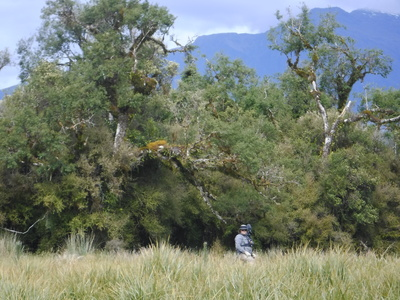
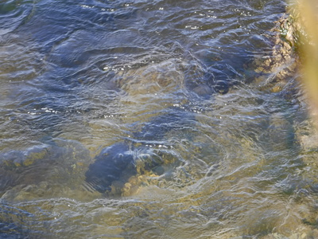
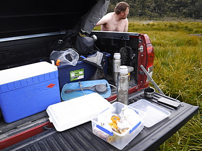
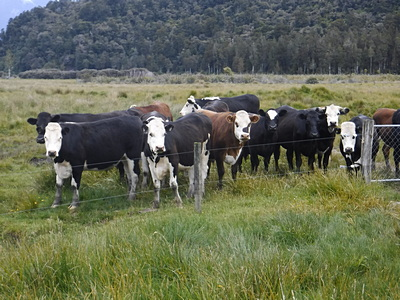

釣行日誌 ＮＺ編 「一期一会の旅：A Sentimental Journey」
またしても大ウナギ
11-23(FRI)-6
４時を過ぎた頃、再びディーンが対岸に渡って崖の上から指示を出す。

流木、倒木、沈木の塊が数多く点在する荒涼とした河原を、２人で両岸に分かれて遡行する。ディーンが歩いて行く岸はブッシュの中なので、ビデオと三脚を担いでの藪漕ぎは大変だろうと思われた。浅瀬があったので渉って彼の岸に来るようにディーンが僕に呼びかけた。ちょっと踏み込んでいくと思ったより深く、チェストハイのウェーダーギリギリまで浸かって緊張した。
岸沿いのブッシュが終わり、牧草地に出た。川岸の土質は粘り気のある砂岩のように見え、水に転げ落ちた岩が連なっている。と、ディーンが足下を指さすので見てみると、太く長い魚影が。大ウナギだ。

デジカメを取り出して撮していると、グネグネと身をくねらせて、けっこう素早く岩の隙間に隠れてしまった。
大ウナギの居たポイントから100mほど進んだところで、対岸に流木の枝が突き出しているポイントがあった。ディーンが、
「ゴウ、あの枝の上流を見てみろ....」
と、静かにささやく。うーん....と思いつつ目を凝らすと、何となく細長い影が見えるような気もする。（笑） ようし、ニンフでいってみようか。とのアドバイスを受け、14番ほどの茶色いビーズヘッドタイプを結ぶ。せぇの！とキャストすると１投目で見事枝を釣ってしまう。(泣) 僕がロッドを煽ってフライを外そうとすると、
「ちょっと待て待て！ ロッド貸して。」
と言いつつ彼は少しラインを出して弛ませてから、振りかぶって大きなロールキャストを繰り出した。フライラインの湾曲が手元から前方へと走って行き、リーダーそしてティペットへと伝わった力が、引っ掛かっていたニンフを後ろ上方へと引っ張って見事枝からフックが外された。
「な！ こんな感じさ！ 枝にフライが掛かった時に、ロッドを煽ったりラインを引っ張ったりすると、フックが深く刺さってよけいに外れなくなっちゃうんだよ。」
『ほほ～ぉ！ なるほど！』
またまた熟練の技を見せられて感心されられることしきりだった。
しばらく遡行したところで、
「もう５時を回ったので、今日はこのへんで打ち止めにしようか？」
とディーンは言い、岸辺の崖を這いずり上がり、牧草地を突っ切ってフェンス沿いに歩き始めた。遙かに遠く小さな赤い点が見えた。彼のトヨタだ。
『うへぇ....あそこまで歩くのか。』
１日分の疲れがどっと出たが、足を動かさないことには前に進めない。ところが牧草地の地面は牛たちの蹄で踏み込まれた穴ぼこだらけで、たやすく足首をこじらせて捻挫しそうである。これは気を付けないと、残り２日の釣りがパァになるなと、神経を使いつつ必死で早足のディーンを追いかける。あれだけの荷物を背負って担いで１日歩いても、まだ彼の歩みはとても速い。恐るべき体力だ。
途中、電気柵をまたぐことになり、彼が先にまたいで乗り越え、僕の番となった。ディーンが三脚の足先に付いたゴムで電気ワイヤーを下に押さえつけてくれたので、低くなったところをまたぎ越す。しかし、それでも僕の股下には高過ぎ、思わずよろめいてディーンの肩に手を掛けて体を支えた。
「おいゴウ、よろめいてコケても決してオレに触るなよ。アースしてこっちまでシビレるからな！」
半分冗談、半分本気で彼が言う。牧場の電気柵は、死ぬほどでは無いが、けっこうショックが来ることは何度か喰らって体が覚えているので
「わかったわかった。すまぬすまぬ。」
と謝る。(笑)
延々と40分ほど歩いただろうか？ようやく赤いトラックまでたどり着き、足回りを脱いでから汗びっしょりのTシャツを着替える。

リヤゲートにランチの残りを出し、魔法瓶の湯でインスタントコーヒーを作って飲む。ほっと一息。オレンジが美味しい。時刻は６時前だった。今日は６尾釣り上げることが出来た。バラしが無かったのは上出来だったが、まだまだキャスティングは無残である。
２人でごそごそ店仕舞いをしていると、またまた退屈に飽き飽きしているらしい牛たちが寄ってきた。

ディーンが車のエンジンをかけたので、金具を外し、そぉ～っとゲートを開け、静かに牛たちを手で追い払いながらトラックの通過を待つ。わらわらと散った牛たちがまた集まる前にゲートを閉めて車に乗り込む。ああ、２日目の釣りが終わった。
夕方７時前にロッジに着いて、さっそく夕食とする。今夜はディーンも出かけないので、買い込んできたメキシコ産ビールを開けた。僕はオレンジジュースで乾杯。前夜に続いてグレースさんのミンスとミートパイがどんどんと胃袋に落ちて行く。単なるトースト＋バターが信じられないほど美味い。(笑)
今夜はMP3プレーヤーから、留学生時代によく聴いていた、これまた懐かしの Avril Ravigne のアルバムを流したら、ディーンが、
「お！アヴリルか。彼女はちょっとオカシイところがあるんだよな....」
と笑いながら言った。僕は彼女の人となりやゴシップについてはあまりよく知らないので、ふ～ん。と答えておいた。
８時半からテレビで映画「キャプテン・アメリカ／ウィンター・ソルジャー(2014)」を放映していたので２人で見入る。往年のハンサム俳優のロバート・レッドフォードが悪者の大ボスを演じていたので、へぇ～と驚く。こんな役も演じるのだね。なにせ字幕無しなので、細かな台詞は理解できないが、CGのジェットコースターアクションを大いに楽しんだ。（笑）
今夜はシャワーからしっかり温水が出たのでさっぱりとして、きちんと常用薬を飲んでからベッドに入る。ディーンがロッジのオーナーの奥さんから蚊・ハエ用スプレーの新しい缶をもらって来てくれたので、部屋中くまなく散布してからぐっすりと眠った。今日も長かった。ああ、左腕が痛む。(笑)
釣行日誌ＮＺ編 目次へ
サイトマップ
ホームへ
お問い合わせ